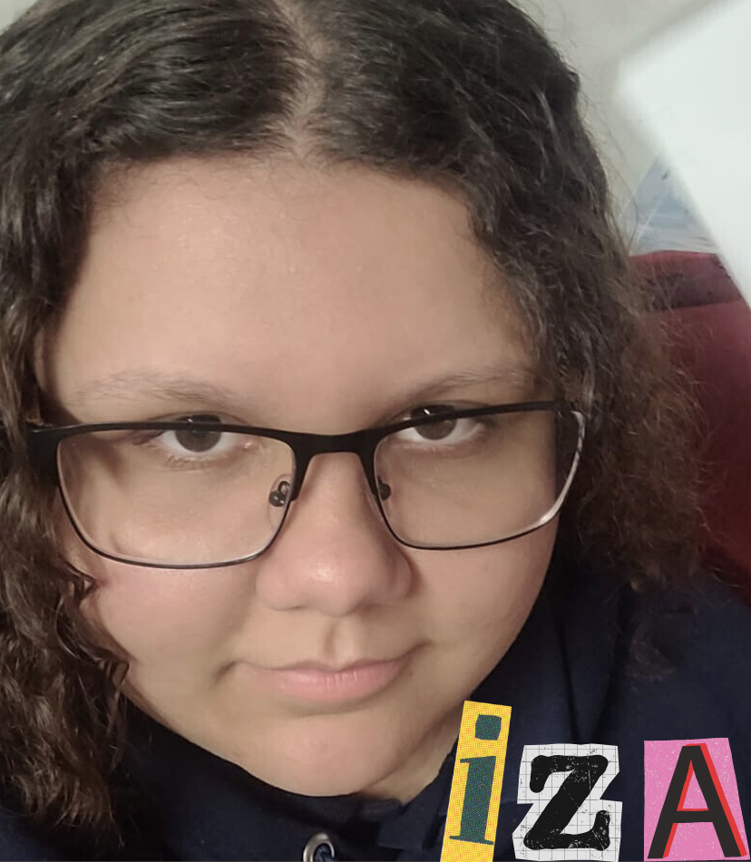
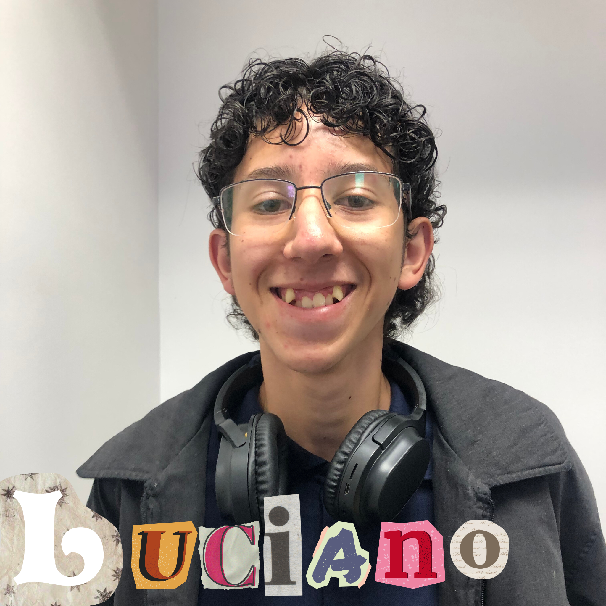
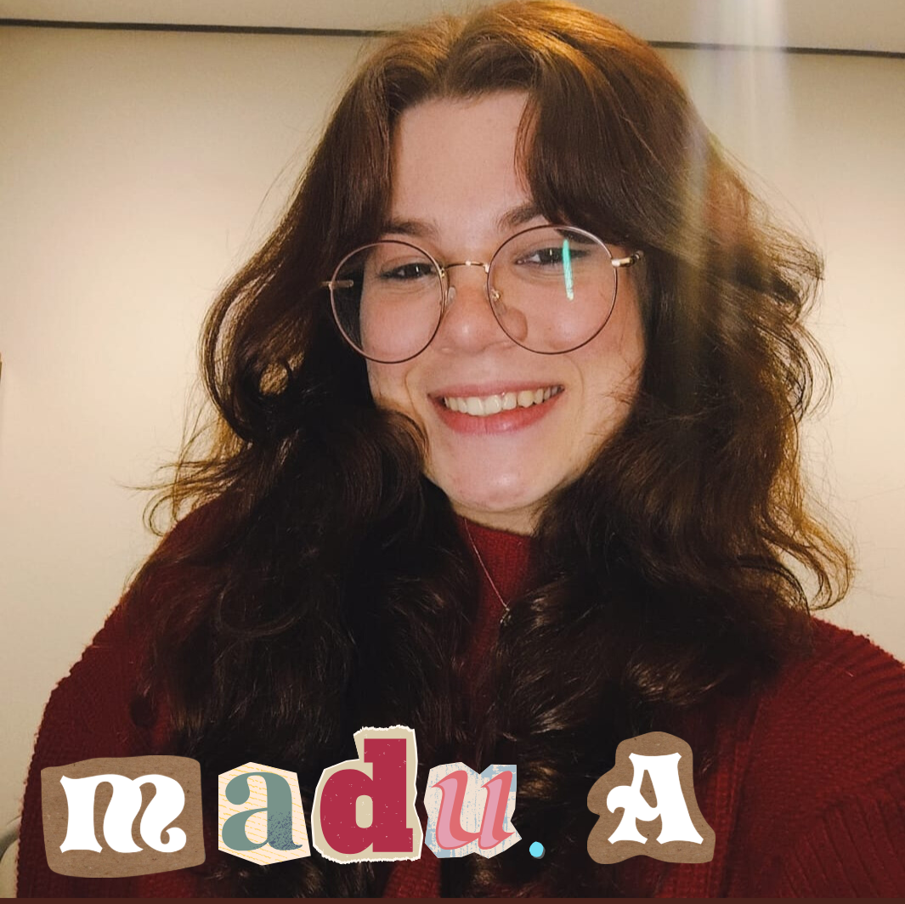
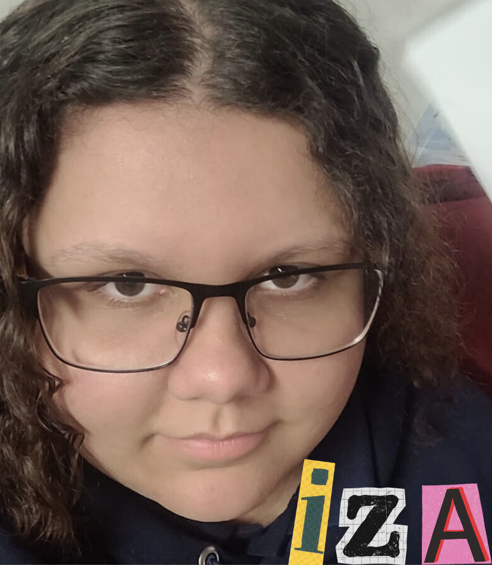
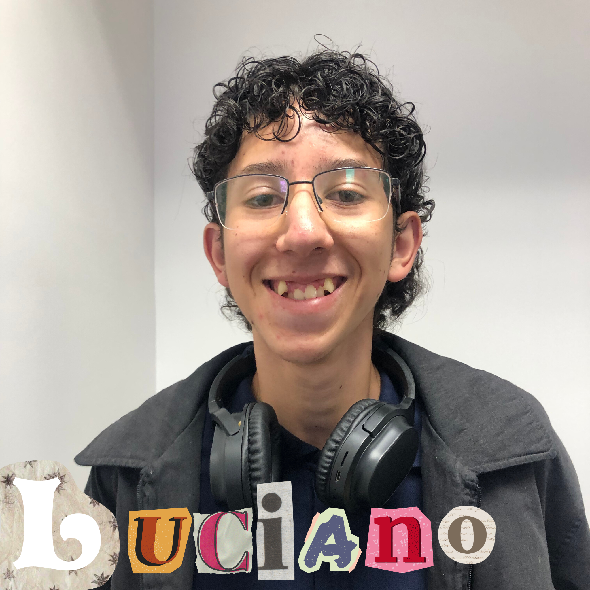
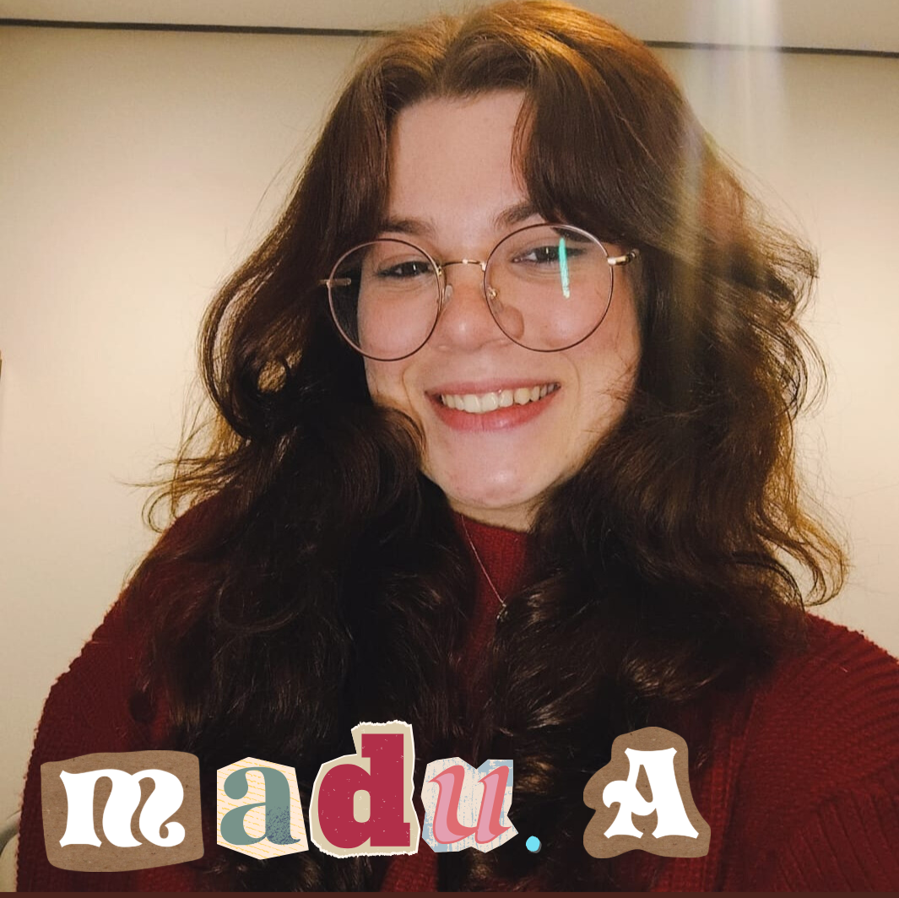
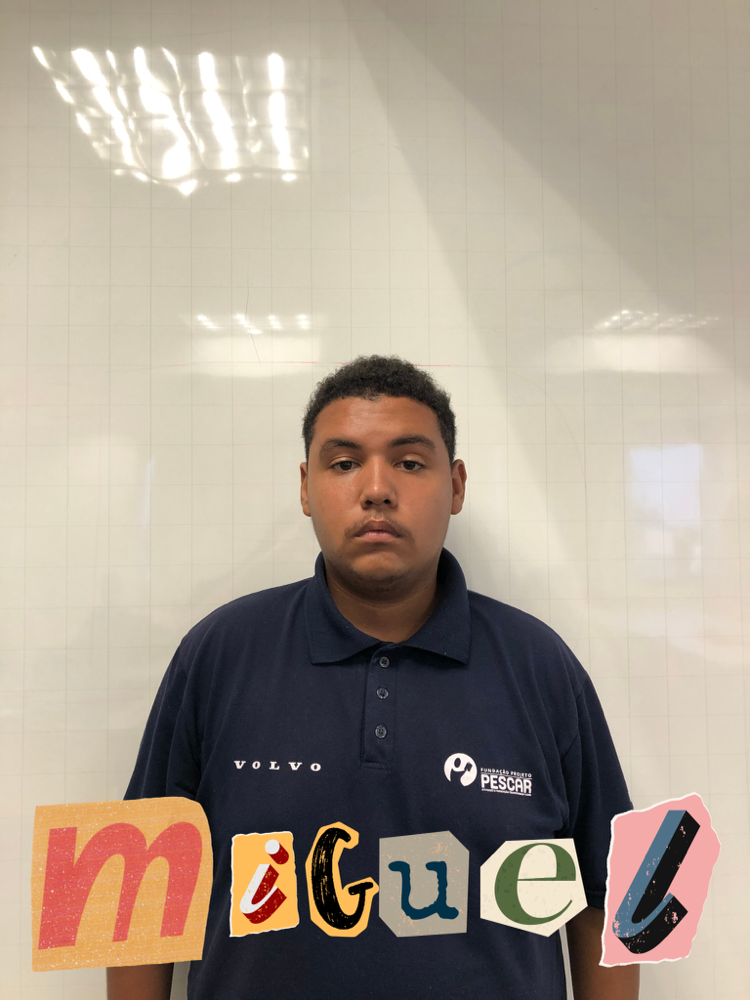
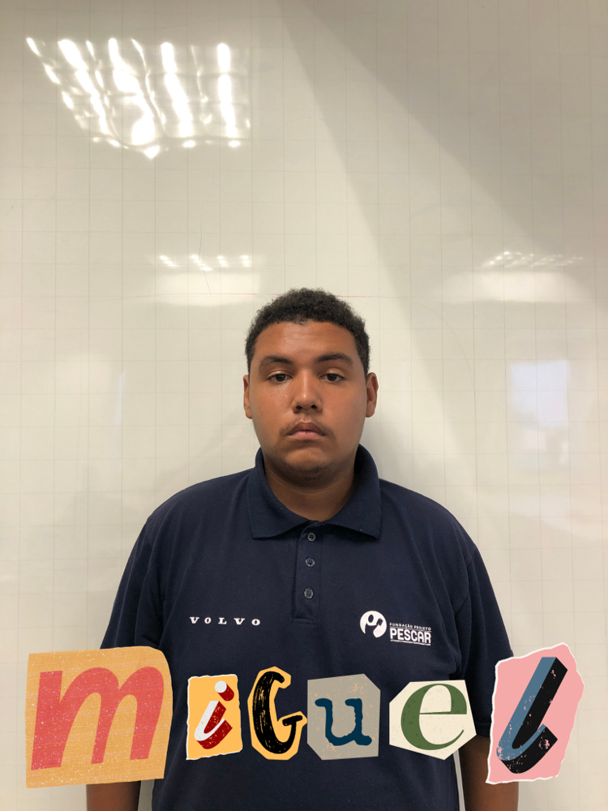

Alunos
 





 


Nome: Gabriel Garcelas Justo
Idade: 17 anos
Sonho: Ser atleta profissional de calistenia, ser formado em ciência da computação e ser desenvolvedor pleno.
Nome: Izadora Da Siva
Idade: 17 anos
Sonho: Ser biologa marinha é um sonho ligado ao mar, à curiosidade científica e ao desejo de proteger os oceanos. A profissão envolve estudar a vida marinha, os ecossistemas e o impacto humano, exigindo dedicação, mas oferecendo experiências únicas e um propósito importante para o planeta.
Nome: Mateus Góis Correa
Idade: 16 anos
Sonho: sonho da minha visa é ser programador, resolvi seguir nesse caminho porque sempre tive uma paixão por tecnologia.
Nome:Alex Silveira Coelho
Idade:18 anos
Sonho: Ter meu próprio negócio que eu possa trabalhar com carros e também ser milionário.
Nome: Luciano Wagner dos Santos
Idade: 17 anos
Sonho: Sonho em ser roteirista algo que eu possa mostrar minhas histórias ao mundo.
Nome: Luciano Wagner dos Santos
Idade: 17 anos
Sonho: Sonho em ser roteirista, algo que eu possa mostrar minhas histórias ao mundo.
Nome: Deni Da Silva Fernandes
Idade: 15 anos
Sonhos: meu sonho é ter uma empresa de jogos, ou trabalhar numa empresa que crie jogos, esse sonho vem dos jogos que eu vivo jogando, já que sempre gostei muito de jogos.
Nome: Maria Eduarda Grassi Araujo
Idade: 16 anos
Sonho: Quero me formar em direito para poder exercer a minha profissão dos sonhos e garantir que a justiça sempre seja feita.
Nome:Maria Eduarda koslovski Aguirre
Idade:15 anos
Sonho: Meu sonho é trabalhar com fotografia e pretendo cursar Jornalismo. Comecei a me interessar por TI por influência dos meus irmãos e fiz um curso na área, onde no início tive dificuldades, mas com o tempo me desenvolvi bastante.